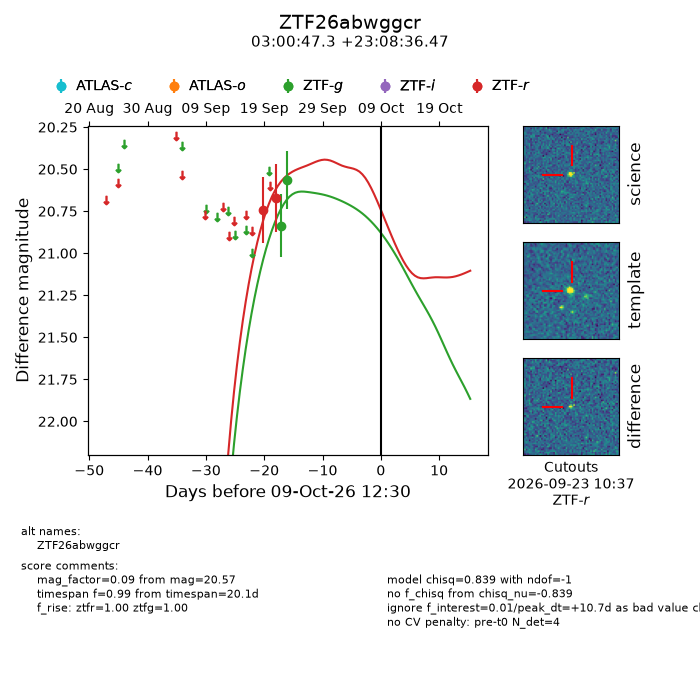
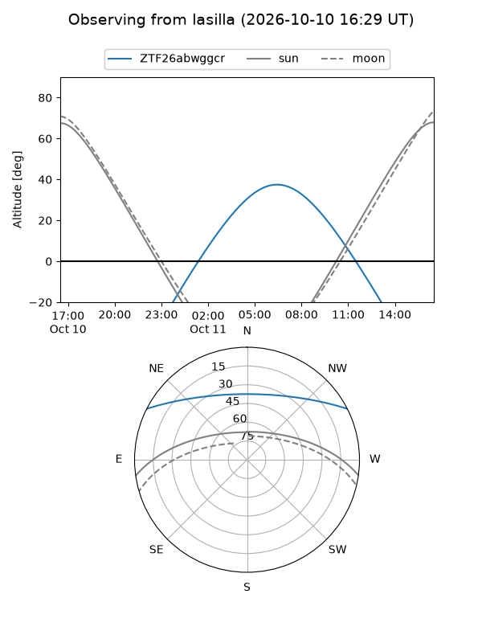
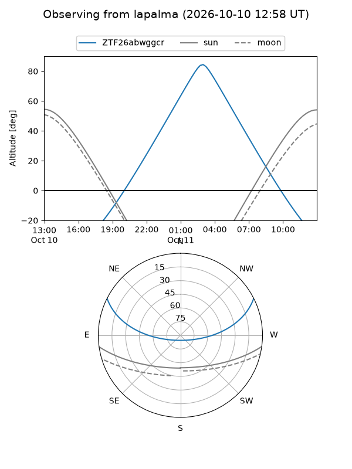
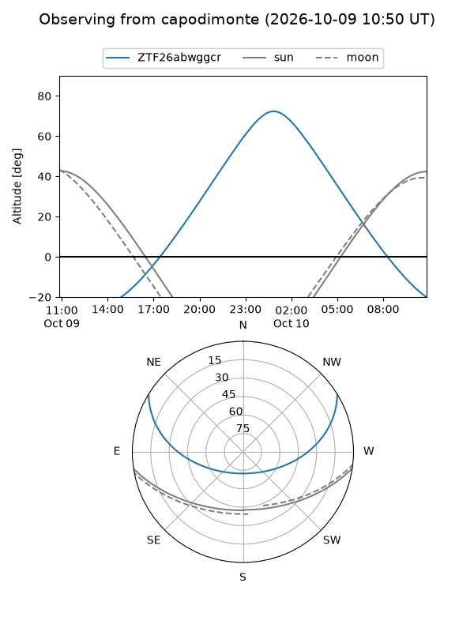
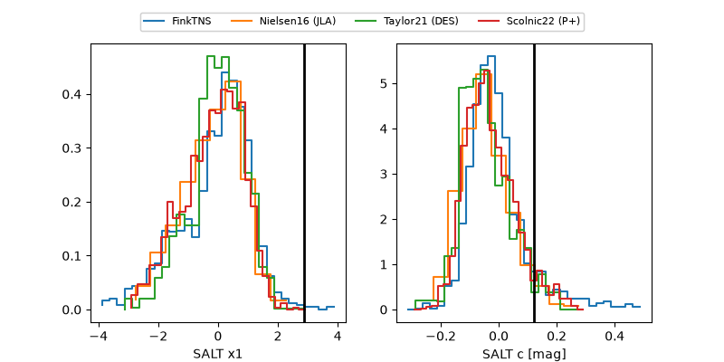

ZTF26abwggcr
Target ZTF26abwggcr at 2026-10-09 12:32
Aliases and brokers:
FINK-ZTF: ztf.fink-portal.org/ZTF26abwggcr
Lasair-ZTF: lasair-ztf.lsst.ac.uk/objects/ZTF26abwggcr
ALeRCE-ZTF: alerce.online/object/ZTF26abwggcr
Direct TNS query: direct search
alt names
ZTF26abwggcr (ztf,fink_ztf)
Coordinates:
equatorial (ra, dec) = 45.1971,+23.14346
equatorial (HMS+DMS) = 03:00:47.31,+23:08:36.47
galactic (l, b) = (157.8704,-30.81232)
Flags:
peak dt: +10.7
Photometry:
last ztfg=20.57, ztfr=20.67
2 ztfg, 2 ztfr detections
Lightcurve

Visibility



Additional plots
